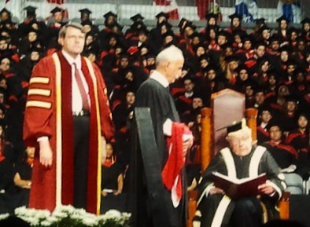
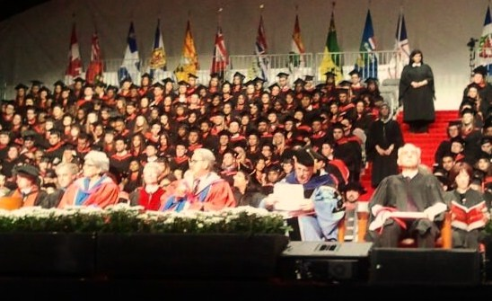
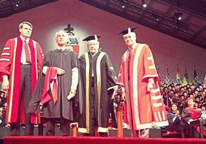

|
|

اهدای دکترای افتخاری رشته حقوق دانشگاه یورک کانادا به نسرین ستوده
پنج شنبه23 خرداد 1392
کمیته گزارشگران حقوق بشر: امروز چهارشنبه ۲۲ خرداد، دانشگاه یورک کانادا دکترای افتخاری رشته حقوق را در مراسم فارغ التحصیلی دانشجویان این دانشگاه به نسرین ستوده اهدا کرد. از آنجا که نسرین ستوده در زندان اوین به سر میبرد دکتر عبد الکریم لاهیجی رئیس فدراسیون بین المللی حقوق بشر به نیابت از ستوده دکترای افتخاری را طی مراسمی در دانشگاه یورک دریافت کرد.

به این منظور مصاحبهای با دکتر سعید رهنما، استاد رشته علوم سیاسی دانشگاه یورک که از بانیان اصلی روند کاندیداتوری نسرین ستوده در دانشگاه بودند ترتیب دادیم:
لطفا فرایند کاندیداتوری نسرین ستوده و اهمیت آن را توضیح دهید
خانم ستوده تنها زندانی سیاسی و تنها حقوقدان زندانی نیست زیرا که زندانیان سیاسی در ایران از طیفهای گوناگون زنان، دانشجویان، روزنامه نگاران و کارگران بسیار زیادند. وقتی که به فکرمان افتاد که در راستای بازتاب اتفاقاتی که در ایران میافتد یک نفر را کاندیدای دریافت دکترای افتخاری کنیم، به این نتیجه رسیدیم که خانم نسرین ستوده به خاطر مجموعه فعالیتهایی که قبلا انجام دادهاند و همچنین به دلیلشناختی که دنیا از ایشان دارد شانس بهتری برای دریافت دکترا خواهند داشت.
ابتدا نامه کاندیداتوری نوشته شد و سپس از بسیاری از اساتید، دانش آموختگان و دانشجویان دانشگاه ازجمله خود شما نامه حمایتی گرفته شد. دانشگاه همیشه دکترای افتخاری را یا به کسانی میدهد که به دانشگاه کمک کرده باشند و یا کسانی که نقش جهانی خیلی بزرگی ایفا کرده باشند. به همین منظور ما با رئیس دانشگاه و افراد دیگر در رابطه با اهمیت این موضوع صحبت کردیم، آنها نیز واقعا خیلی توجه کردند به این قضیه که چقدر مهم است که یک دانشگاه بزرگ آمریکای شمالی چنیین حمایتی از زندانیان سیاسی ایران بکنند.
در مرحله بعد این نامه به کمیته ویژه ای در سنای دانشگاه که نامزدهای دیگری نیز بررسی میشوند فرستاده شد و کمیته نظر خود را در رابطه با تمام کاندیداها اعلام کرد و به شکل رده بندی شده این نظر به جلسهای که تنها رئیس دانشگاه و رییس تشریفاتی دانشگاه در آن عضویت دارند ارسال و این دو نفر کاندیداهای برنده را انتخاب می کنند. این قسمت اول قضیه بود.

مساله دوم این بود که دانشگاه دکترای افتخاری را به کسی میدهد که بتواند بیاید در مراسم رسمی شنل و کلاه مخصوص دانشگاه را بپوشد و دکترای افتخاری را دریافت کند. دانشگاه به ما گفت که خوب خانم نسرین ستوده که نمیتواند بیاید و زندانیست پس باید دکترا به شکل غیابی داده شود. این مساله سخت تری بود چون دانشگاه گفت که باید نمایندهای از طرف نسرین ستوده بیاید و دکترا را دریافت کند.
برای تماس با خانم ستوده و خانواده با آقای دکتر لاهیجی تماس گرفتیم و چون امکان مسافرت اعٰضاء خانواده ممکن نبود از خود آقای لاهیجی دعوت شد که به نمایندگی خانم ستوده به کانادا سفر کنند. با آنکه مراسم اٰعطای دکتری نزدیک به زمانی بود که دکتر لاهیجی می بایست در کنگره فدراسیون بین المللی حقوق بشردر ترکیه شرکت می کردند، بخأطر اهمیت موضوع دعٰوت دانشگاه را پذیرفتند.
دکترای افتخاری چه تاثیری میتواند داشته باشد؟
تاثیر این دکترای افتخاری در سطح جهانی تاکید بر این موضوع است، که چرا شخصیتی مانند خانم نسرین ستوده به جای اینکه آزادانه به فعالیت بپردازد، به خاطر دفاع از حقوق انسانهای دیگر در زندان به سر میبرد و تشخیص این موضوع از طرف دانشگاه بسیار مهم است. امیدواریم در جهت حفظ امنیت و سلامت خانم ستوده نیز موثر باشد.

مراسم اهدای دکترا به چه شکل است؟
مراسم در روز دوازده ژوئن یا بیست و دوم خرداد است و با اینکه دکترای افتخاری حقوق است ولی مراسم اهدا در روز مراسم فارغ التحصیلی دانشکده مطالعات اجتماعی و حرفهای صورت گرفت. و در این مراسم هزاران دانشجو با والدین و مهمانانشان شرکت کردند. در این مراسم دکتر لاهیجی از طرف خانم ستوده متنی را قرائت کرد که خود این موضوع در رابطه با آگاهی بخشی در مورد مساله حقوق بشر و زندانیان سیاسی بسیار مهم میباشد. دانشگاه یورک از معدود دانشگاههای آمریکای شمالی است که این جنبه ترقی خواهی درش موجود است.